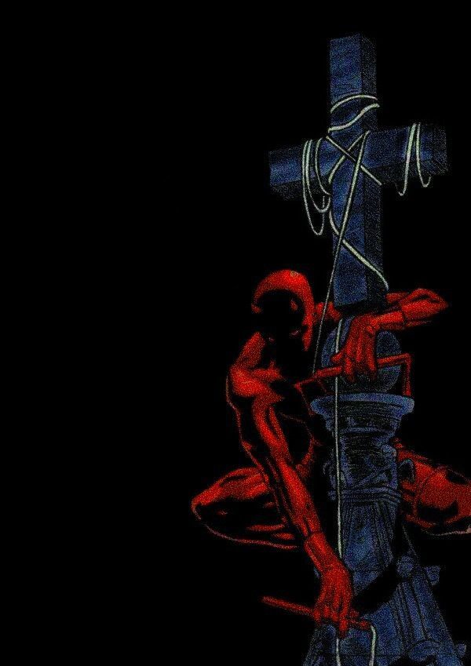

DLC Page 2
So If you didn't know Pandas as you know them aren't the original pandas. Red Pandas are the first pandas and the pandas you know as pandas were named that cause they looked like red pandas. Also the Fire Fox in the browser fire fox is a red panda because they are also called a fire fox. Fun little animal fact for you.

Oblivion Horse Armour
One of the first small dlcs for video games was Horse armour for Oblivion. It was like 2 bucks for horse armour, which at the time was considered a biiiiig effen rip off. But now people pay like 10 bucks for Nike Air Jordans for their Fortnite character.

Daredevil is like one of the best superheroes of all time
Daredevil is a Marvel Superhero. He is blind but has ultra heightened sences. He has some of the best stories marvel has to offer, such as born again and the Man without fear. I also enjoy the Chip Zedarsky run that ended last year. I just like him so much. If Spider-man wasn't my favourite superhero, Daredevil probably would be. Welp maybe Cyclops, then Daredevil.